We have data set X. Function of correct answers - f ∗(xi) = yi.
We want model with error rate ≤ 𝜖.
Solution:
Define range space: , ∀x∈X Pr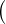x = 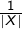
= 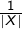
where
Find an 𝜖-net S. S is some sample.
By 𜖠−net definition, every model with error rate ≥ 𜖠was wrong on some data in S
Equivalently, if a model got everything right on that sample, it had to have error rate < 𝜖.
We are in space ℕd
Among all those points, are "special".
i-th query: Count special pts in region  (hyperrect)
(hyperrect)
Solution setup:
 : big enough region of ℕd
: big enough region of ℕd
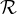: all possible hyperrects of  .
.
Solution setup:
 : big enough region of ℕd
: big enough region of ℕd
 : all possible hyperrects of
: all possible hyperrects of  .
.
= "how many special pts are in , relative to universe"
so almost the answer!
Preprocess an 𝜖-net. Call it 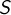.
When presented with query  , our answer is
, our answer is
Ri ∩ S has special pts.
Why claim that Ri − S has 𝜖N special pts?
Because if it had > 𝜖N points, S would have to intersect it!
Therefore, we overshoot by < 𝜖N
This error can be adjusted (pick smaller 𝜖)!
 .
.
Randomly picking (sufficiently many) elements to form the net
How many is sufficient?
Natural complexity measures will give us bounds on that.
Other ways
We have range space  again.
again.
Let’s define
VC-Dimension: Size of biggest possible shattered subset of X.
i.e. size of biggest , such that
We must prove existence of 𝜀-net of size
We partition the set of ranges based on size (probability).
ℛi = {R ∈ℛ : Pr R
R ∈ (2i−1𝜖, 2i𝜖)}
∈ (2i−1𝜖, 2i𝜖)}
where ℛ0 = {R ∈ℛ : Pr R
∈ (0, 20𝜖)}
R
∈ (0, 20𝜖)}
Each group () creates sub-rangespace 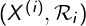, where X(i) = ⋃ R∈ℛiR. Notice - there are groups.
Let’s prove that i-th sub-rangespace has 𝜖-net of size
Use definition of AC:
This gives us: 
But, by definition, for each range R in ℛi, Pr R
R ≥ 2i−1𝜖
≥ 2i−1𝜖
Trick: Each sub-rangespace we treat as separate probabilistic space.
Pr i R
R = PrR|X(i)
= PrR|X(i) = = ≥
= = ≥
Since every range in this sub-rangespace has this lowerbound, a 1∕2τi-net will cover all ranges. So it’s also 𝜖-net in the original sense (if we removed ranges beyond this subspace).
The first (VC-Dimension slide) bound says that such a net exists and has the desired size.


 be an upper bound on its doubling constant. For each integer
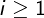 set
be an upper bound on its doubling constant. For each integer
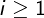 set
Then there exists an  -net for
-net for  of size
of size
By definition of the doubling constant,
So there is a packing set of size at most , such that every  lies within distance of some
lies within distance of some 
Clustering: Assign each to one of its “nearest†centers . How big is the overlap?
Let’s take a center Q, and some range R in its "vicinity" (i.e. Pr R ∩ Q
R ∩ Q ≥ 𝜖i−1.
≥ 𝜖i−1.
Recall (packing) that Pr R△Q
R△Q ≤ 𝜖i−1
≤ 𝜖i−1
Now,
Plugging in previous assumptions, we get:
 -net on the centers: Each center has 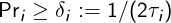. A -net for the 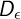 centers automatically hits every , since each such
has ≥ δi overlap with closest center.
-net on the centers: Each center has 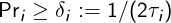. A -net for the 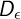 centers automatically hits every , since each such
has ≥ δi overlap with closest center.
Chernoff-style bound tells us to draw
i.i.d. points under .
The two cases (i), (ii) only differ in the way we sum mi (small vs doubling constant)